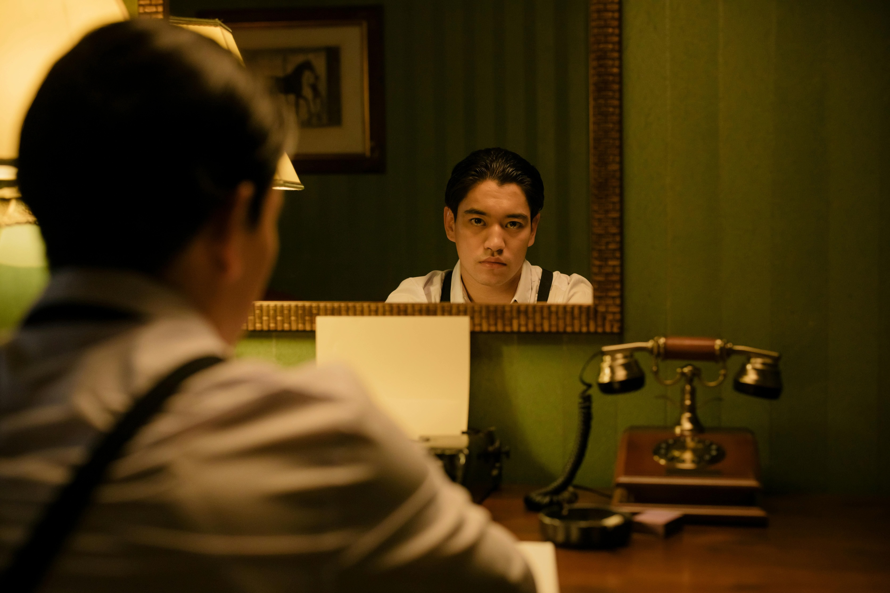
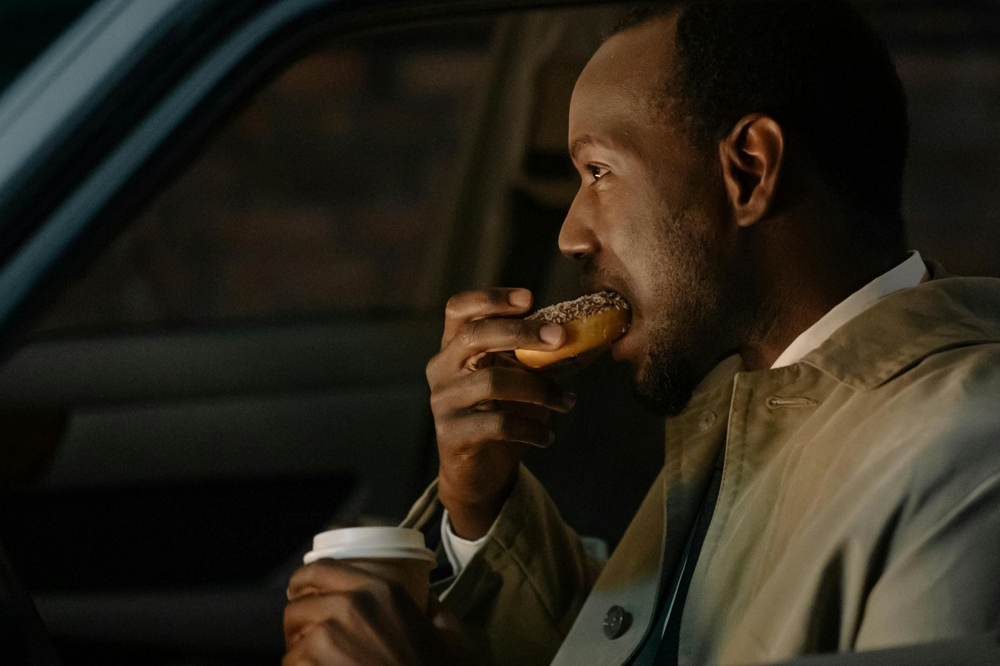
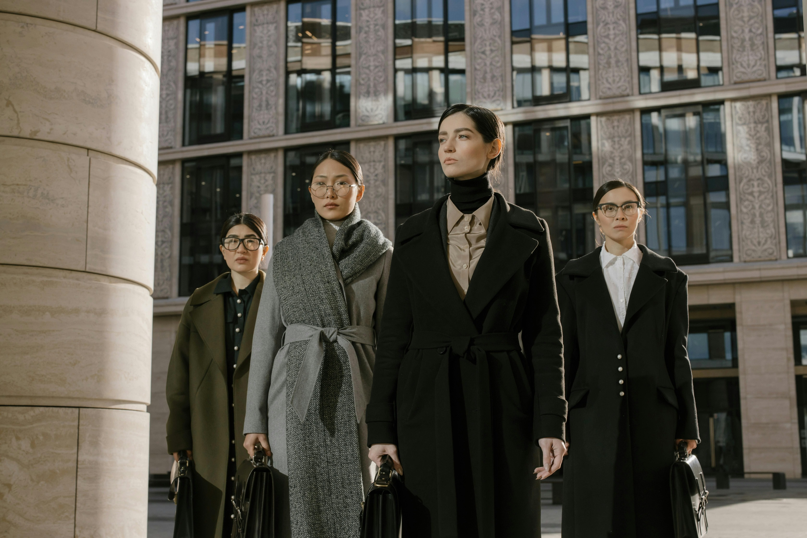

The Wanabe Writing: The fine art of almost-writing a best-seller.

Always “working” on a novel but never quite past page two. Got the fancy TYPEWRITER, the MIRROR, and the tortured expression—no actual words.
The Sticky Dancers: When the beat drops, but the rhythm never picked up.
crew of office warriors-turned-F-FIELDnleashing their finest and awkward sway. They’re all in, despite zero coordination and zero audience.
The Bored Officer: Keeping the peace, mostly by sitting still.

He’s got AN Uncanny ability to look busy doing absolutely nothing. Mostly found sighing at the clock, hoping for some action—just not too much action.

The Gang of Suits: Dressed for success, but stuck in a meeting.
This elite squad is armed with PowerPoints. They can turn any casual chat into a two-hour strategy session. They walk in with sharp ties and even sharper opinions.